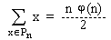

Algebra 1
sept. '96.
smer: R, N, V, Astronomija,
Mehanika
1. Neka je Tx semigrupa svih funkcija skupa X, h Î End(Tx) i h surjekcija. pokazati da je slika permutacije skupa X u odnosu na h opet permutacija.
2. Neka je Pn = {x Î N ½ (x, n) = 1, x < n}. Pokazati da je:
a) x Î Pn Û n - x Î Pn
b) , gde je j Ojlerova funkcija.
3. Neka je G konacna grupa i sp broj p-Silovljevih
podgrupa grupe G. Ako je H podgrupa grupe G i  broj
p-Silovljevih podgrupa grupe H, onda je
broj
p-Silovljevih podgrupa grupe H, onda je  £
sp .
£
sp .
4. Odrediti minimalni polinom za  nad
poljem Q.
nad
poljem Q.
a) Ako je K korensko polje tog polinoma, odrediti [K : Q].
b) Da li je K = Q( )?
)?